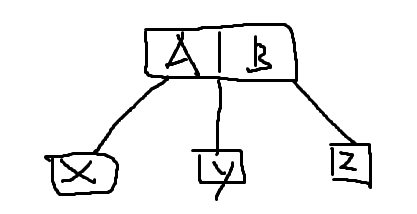
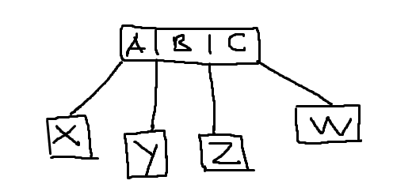
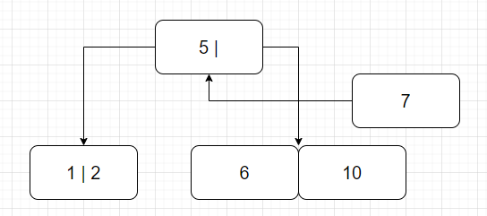
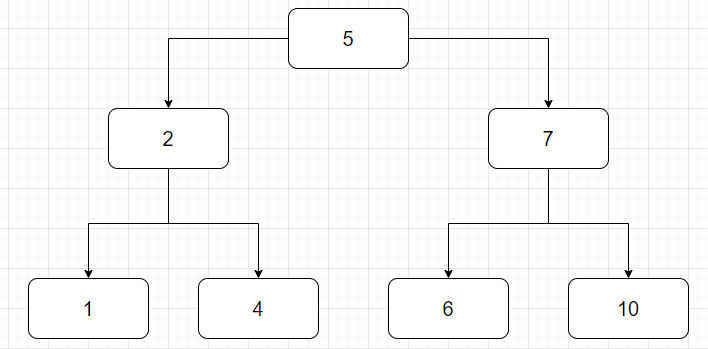
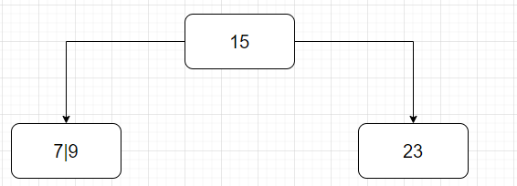
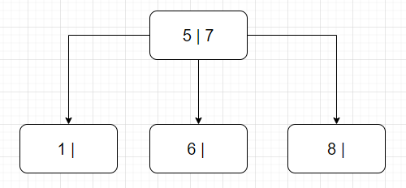
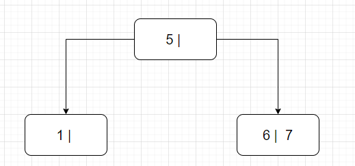
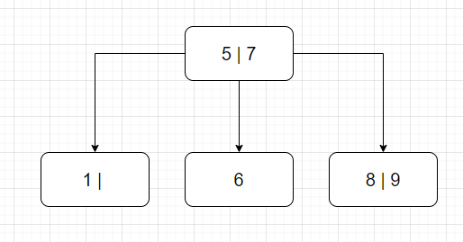
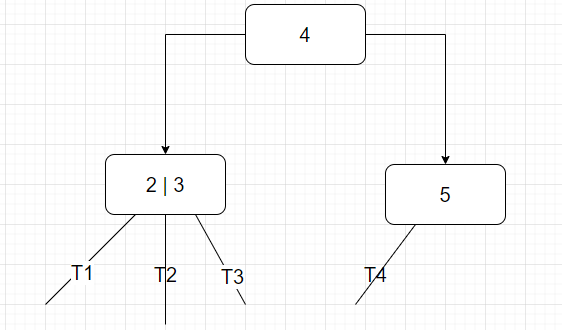

Node 2 là node có hai con và lưu giữ một giá trị (một khóa). Giá trị này lớn hơn giá trị của node con bên trái và nhỏ hơn giá trị của node con bên phải. Nói cách khác, một node 2 là một node trong của cây nhị phân đầy đủ (Luôn có một giá trị và có hai con).
Node 3 là node có ba con và lưu giữ hai giá trị. Ta gọi giá trị của node 3 này là A và B. Giá trị của ba node con của nó là X, Y và Z. Ta có bất đẳng thức:
$$ X < A < Y < B < Z. $$
X có thể là một node lưu giữ nhiều giá trị, khi đó, toàn bộ giá trị của nó vẫn phải tuân thủ theo bất đẳng thức trên, tức là
$$ X_1, X_2, ..., X_n < A $$
Tương tự ta có
$$ A < Y_1, Y_2, ..., Y_n < B $$
Và
$$ B < Z_1, Z_2, ..., Z_n $$
Node 4 là node có bốn con và lưu giữ ba giá trị, nếu đặt ba giá trị này là A, B và C. Giá trị của bốn node con là X, Y, Z và W, thì ta có bất đẳng thức:
$$ X < A < Y < B < Z < C < W $$
Tổng quát hóa, node có n khóa thì có n + 1 con.
Như vậy, một cây 2 - 3 là cây chứa node 2 và node 3. Cây 2 - 3 - 4 là cây chứa node 2, node 3 và node 4.
Cây 2 - 3:

Cây 2 - 3 - 4:

Với B-Tree bậc N, các node của cây chỉ có thể chứa tối đa N - 1 khóa, tức là có tối đa N con. Node gốc phải chứa tối thiểu 1 khóa.
Với B-Tree bậc N, mọi node trừ node gốc có thể có nhiều nhất N con và ít nhất N/2 con.
Một cây 2 - 3 và 2 - 3 - 4 không bao giờ lớn hơn chiều cao tối thiểu của cây nhị phân. Ví dụ cho cây ở 2 - 3 trên, số khóa là 16 và chiều cao của nó là 3. Còn ở cây nhị phân, với số khóa là 16 thì chiều cao của nó tối thiểu là 5. Cây 2 - 3 và 2 - 3 - 4 tồn tại để giảm chiều cao của cây bằng cách tăng số lượng khóa có trên mỗi node trong cây. Từ đó giúp tiết kiệm chi phí thuật toán.
Các khóa tăng dần từ trái qua phải trong cùng một node và trong cây, là một tính chất của Search Tree.
Cân bằng tuyệt đối, các node lá có cùng mức với nhau và phải chứa giá trị.
Fun fact: Khi xây dựng cấu trúc dữ liệu trong máy tính, các node sẽ không chứa giá trị mà chỉ chứa địa chỉ của vùng nhớ, trỏ đến giá trị mà node đó chứa.
Fun fact2: Các cây có bậc thấp, chẳng hạn bậc 2 như BST hay AVL thì chúng được thiết kế để dùng ở bộ nhớ trong. Các cây bậc cao hơn thì dùng ở bộ nhớ ngoài. Do đó B-tree là cây m-phân dùng để tổ chức dữ liệu phục vụ cho việc truy xuất dữ liệu ở bộ nhớ ngoài.
Question: Với chiều cao H thì số node tối thiểu và tối đa của cây 2 - 3 hoặc 2 - 3 - 4 là bao nhiêu? Answer: Cây 2 - 3 hoặc 2 - 3 - 4 sẽ có số node tối thiểu khi nó là cây nhị phân hoàn hảo. Lúc đó số node với chiều cao H là:
$$ N_{min} = 2^{H - 1} $$
Cây 2 - 3 sẽ có số node tối đa nếu mọi node đều là node 3. Xét một số trường hợp:
$$ \begin{align*} H &= 1, N = 1\ H &= 2, N = 3\ H &= 3, N = 9\ \end{align*} $$
Như vậy cây 2 - 3 có chiều cao H sẽ có số node tối đa là:
$$
\begin{align*}
N_{max} &= 1 + 3 + 9 + ... + 3^{H - 1}
\text{(chuỗi hình học)}\
&= \cfrac{3^{H - 1 + 1} - 1}{4 - 1}\
&= \cfrac{3^H - 1}{t - 1}
\end{align*}
$$
Đối với cây 2 - 3 - 4:
$$
\begin{align*}
N_{max} &= 1 + 4 + 16 + ... + 4^{H - 1}
\text{(chuỗi hình học)}\
&= \cfrac{4^{H - 1 + 1} - 1}{4 - 1}\
&= \cfrac{4^H - 1}{t - 1}
\end{align*}
$$
Như vậy ta có hai bất đẳng thức cho cây 2 - 3 và cây 2 - 3 - 4:
$$ \begin{align*} 2^{H - 1} \leq N \leq \cfrac{3^H - 1}{t - 1}\ 2^{H - 1} \leq N \leq \cfrac{4^H - 1}{t - 1} \end{align*} $$
Tổng quát hóa cho B-Tree bậc t, số node tối đa khi cây có chiều cao H là:
$$
\begin{align*}
N_{max} &= 1 + t^2 + t^3 + ... + t^{H - 1}
\text{(chuỗi hình học)}\
&= \cfrac{t^{H - 1 + 1} - 1}{4 - 1}\
&= \cfrac{t^H - 1}{t - 1}
\end{align*}
$$
Đối với thao tác thêm, ta luôn thêm khóa ở node lá.
Chèn một khóa vào node có chỗ nhưng sai vị trí.
Giả sử ta cần chèn khóa 1 vào cây 2 - 3 ở trên, ta cần đẩy khóa 2 sang vị trí còn lại của node và thêm khóa 1 vào.


Chèn vào node con có hai khóa khi node cha chỉ mới có một khóa.

Ta đẩy khóa 7 lên trên.
Do node cha chỉ mới chứa một khóa là khóa 5, nên ta thêm khóa 7 lên node cha. Hai khóa 6 và 10 tạo thành hai node riêng biệt.

Cả node con cần chèn và node cha đều có hai khóa.
Giả sử ta cần chèn node 1 vào cây 2 - 3 dưới đây:

Ta đẩy 2 lên node cha, và tách khóa 1 và khóa 4 thành hai node riêng biệt.

Có thể tạm cho node cha là một node 4 chứa ba khóa.

Sau đó ta đẩy khóa 5 lên tạo thành một node mới và tách khóa 2 cùng khóa 7 thành hai node riêng biệt.
Đối với cây 2 - 3 - 4. Việc thêm node có đôi chút khác biệt khi mà phải tách node trước rồi mới thêm khóa. Đồng thời, việc tách node sẽ không giống với cây 2 - 3.
Giả sử ta thêm 9 vào một node có 3 khóa như sau:

Ta sẽ tách trước, đẩy 15 lên thành một node cha, 7 và 23 thành hai node con. Sau đó cho khóa 9 vào chung node với khóa 7.
Một ví dụ khác, ta cần chèn 65 vào cây dưới đây:

Đầu tiên, ta tách node 23|27|43 thành ba node gồm khóa 27 là khóa cha, nằm chung với khóa 15. Node 23 và 43 là hai node con. Sau đó ta thêm 65 vào chung node với khóa 43.

Một khóa ở trong cây 2 - 3 hoặc 2 - 3 - 4 nếu là node trong thì luôn luôn có hai con. Vì vậy nên bản chất việc xóa khóa của node trong chính là xóa node của cây nhị phân tìm kiếm.
Xóa một khóa trong một node lá có hai trường hợp: node đó chỉ có một khóa và node đó có nhiều khóa. Nếu node đó có một khóa, khi xóa đi thì cây trở nên mất cân bằng, do đó ta cần tái phân bố lại cây để cây cân bằng. Trong trường hợp node lá có nhiều khóa, chúng ta chỉ đơn giản là xóa khóa đó đi mà thôi.
Trường hợp này xảy ra khi các anh em của node bị xóa có vừa đủ khóa (không anh em nào bị dư). Giả sử ta cần xóa khóa 8 trong cây dưới đây
Sau khi xóa, node trở nên trống và không chứa giá trị nào và trở nên mất cân bằng (không thể có node lá rỗng).

Ta cần trộn các khóa lại để tạo thành một node chứa khóa. Ở đây ta kéo khóa 7 xuống để gộp chung với khóa 6.
Cho ví dụ xóa khóa 70 trong cây 2 - 3. Đầu tiên ta tìm phần tử nhỏ nhất cây con phải hoặc lớn nhất cây con trái của 70. Ở đây ta chọn 80 và hoán vị 70 với 80. Sau đó ta tiến hành xóa 80 đi, cây trở nên mất cân bằng.
Tuy nhiên do các anh em của nó vừa đủ không dư khóa, nên ta sẽ tiến hành trộn node bằng cách kéo khóa 80 xuống và hợp lại với khóa 60. Ngoài ra cũng có thể kéo 90 xuống và trộn với 100.

Trường hợp này xảy ra khi node anh em của node bị xóa dư khóa. Giả sử ta cần xóa khóa 6 ở cây bên dưới:
Sau khi xóa xong, node chứa khóa 6 trở thành rỗng. Lúc này ta sẽ mượn một khóa từ node khác để lấp vào node rỗng đó. Tuy nhiên ta không mượn trực tiếp mà sẽ kéo từ node cha xuống và đẩy khóa từ node anh em của nó lên.

Cũng trong ví dụ xóa khóa 70 ở trên, giả sử bây giờ chúng ta tiến hành xóa khóa 100. Do là ở node lá nên ta cứ việc xóa mà không cần tìm phần tử thay thế. Sau khi xóa thì cây trở nên mất cân bằng. Nhận thấy anh em của nó dư dả khóa, ta chọn cách mượn thêm khóa (tái phân bố).

Chú ý rằng ta không thể trực tiếp đưa khóa cần mượn sang node trống, làm như vậy sẽ vi phạm tính chất của cây. Ta cần tái phân bố bằng cách đẩy khóa bị mượn lên cho node cha, rồi từ node cha đẩy xuống một khóa cho node trống

Giả sử cho cây bên dưới và ta muốn xóa node 5.
Thì như ví dụ ở case 2, ta sẽ chuyển khóa 3 lên và chuyển khóa 4 xuống. Lúc này khóa 2 chỉ có một giá trị nhưng lại có 3 con là T1, T2, T3. Ta sẽ chuyển cây con T3 sang thành con thứ nhất của node chứa khóa 4 và T4 thành con thứ hai của node chứa khóa 4.

Tương tự đối với merge các node.
Có thể tóm tắt các trường hợp như sau


Ví dụ ta cần xóa node 80. Sau khi xóa thì cây trở nên mất cân bằng. Do node anh em của nó không dư nên tiến hành trộn 90 và 60 lại. Tuy nhiên lúc đó node của 90 hồi nãy lại bị trống. Mà node anh em của node đó lại không dư dả, nên ta phải trộn 50 và 30 lại.

Việc này dẫn đến làm giảm chiều cao của cây.

Việc xóa node trong cây 2 - 3 - 4 cũng tương tự như cây 2 - 3.
Complexity của các thao tác là: